SelectEdit
Selective Source Consistency for Inversion-Free Video Editing
项目状态：计划投稿 CVPR 2027。李昱辰为共同第一作者。当前论文为匿名审稿准备稿，PDF 保留原始审稿标识；作者列表与公开版本链接将在确认后补充。
背景
文本引导视频编辑希望只修改描述中指定的对象或属性，同时保持周围场景、物体边界和运动轨迹。以“把演奏者替换为机器人”为例，编辑需要显著改变人物外观，却不能破坏乐器、墙面纹理、相邻人物或跨帧运动。
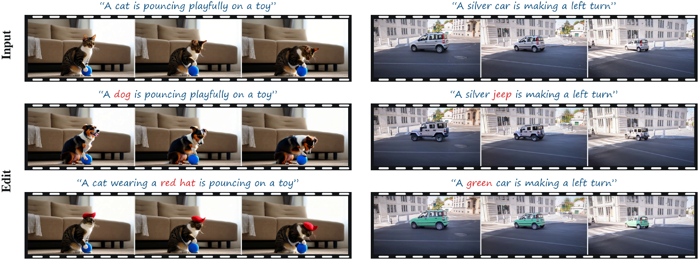
- 编辑强度与源一致性的矛盾：源约束过强会压制目标变化，约束过弱又会改写无关内容。
- 空间选择问题：局部编辑需要回答“哪里可以改变”，而不是把文本语义均匀施加到整段视频。
- 跨帧细节问题：固定坐标上的时间聚合可能混合不同运动表面，导致纹理漂移与闪烁。
核心思路
SelectEdit 的核心是选择性源一致性：让源对象与源运动承担互补角色。源对象注意力决定可编辑区域，源运动则提供跨帧细节对应关系；同一空间选择同时连接“改什么”和“保留什么”。
- 在源一致的编辑轨迹上逐步形成目标外观，避免整体结构过早偏离。
- 用源对象注意力定位区域，并把目标对象的语义贡献注入该区域。
- 在解码后沿源运动恢复互补区域的多尺度细节，同时保留已编辑的粗尺度外观。
方法
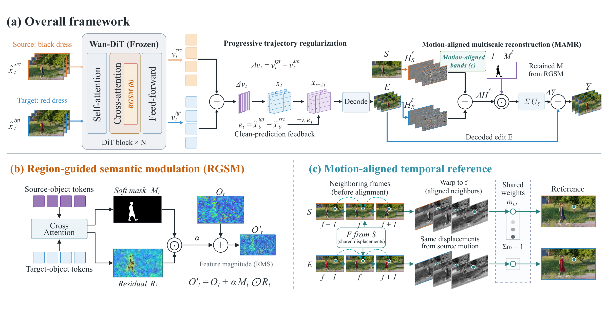
1. 渐进轨迹正则
方法在冻结的视频 VAE 与速度预测器上进行直接源到目标的传输，不需要训练，也不需要反演。Progressive State Shifting（PSS）逐步把累积编辑位移纳入目标查询，使目标外观在稳定轨迹上形成；Clean-prediction Feedback 则利用源分支与目标分支的干净状态预测差异修正更新，控制整体偏移。
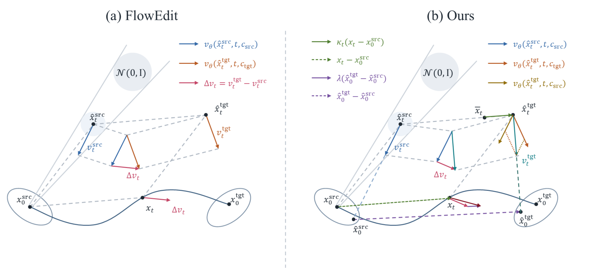
2. RGSM：区域引导语义调制
Region-Guided Semantic Modulation（RGSM）把空间定位与语义内容解耦：源对象 token 的注意力形成软区域，目标对象 token 的 value 贡献提供待注入内容。该软区域既调制目标语义残差，也对早期 latent transport 进行空间加权，使目标变化更集中于请求区域。
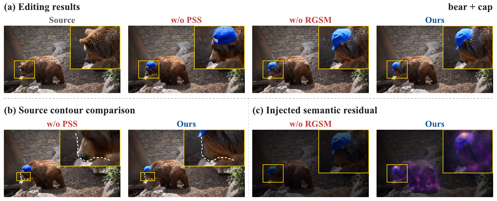
3. MAMR：运动对齐多尺度重建
Motion-Aligned Multiscale Reconstruction（MAMR）使用源视频光流与对应置信度，为源视频和解码编辑结果构造共享的运动对齐金字塔。它在编辑区域的补集恢复残差频带，同时保留编辑结果的最粗尺度分量，从而避免把源对象重新带回已编辑区域。
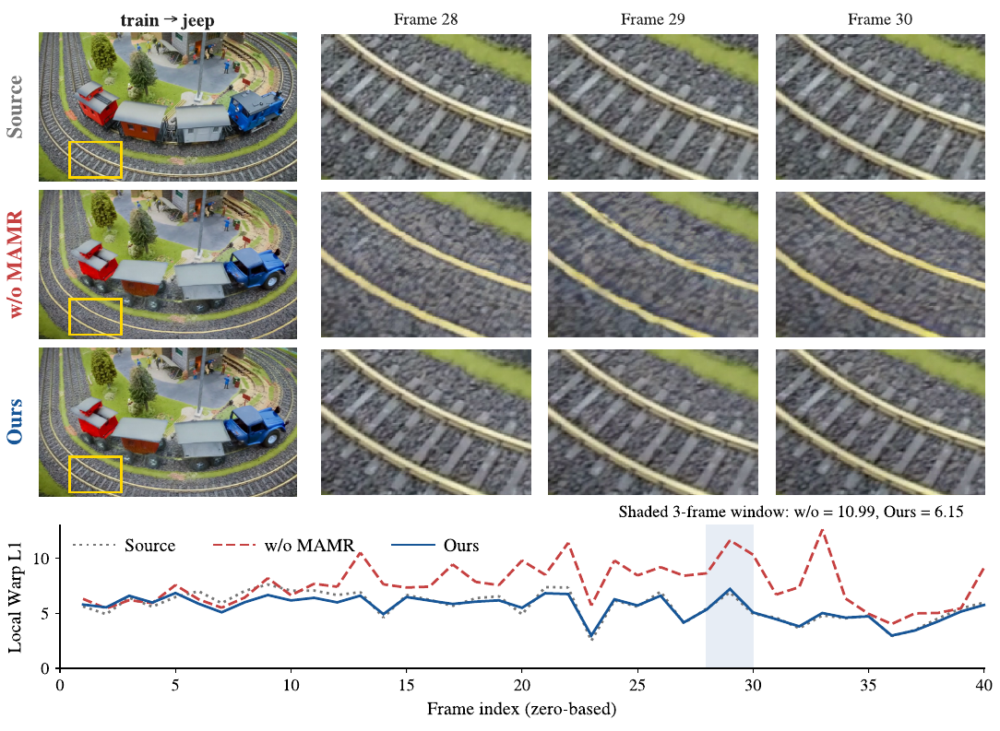
实验
1. 实验设置
- 数据：FiVE-Bench 的全部 419 个编辑任务，覆盖 6 类对象替换、颜色与材质变化、对象添加和移除。
- 基线：TokenFlow、DNAEdit、DFVEdit、Wan-Edit、FlowDirector、UniEdit-Flow 与 RF-Solver-Edit。
- 评价维度：结构与背景保持、全局及编辑区域文本对齐、运动保真度与时间 warp 误差。
2. 主结果
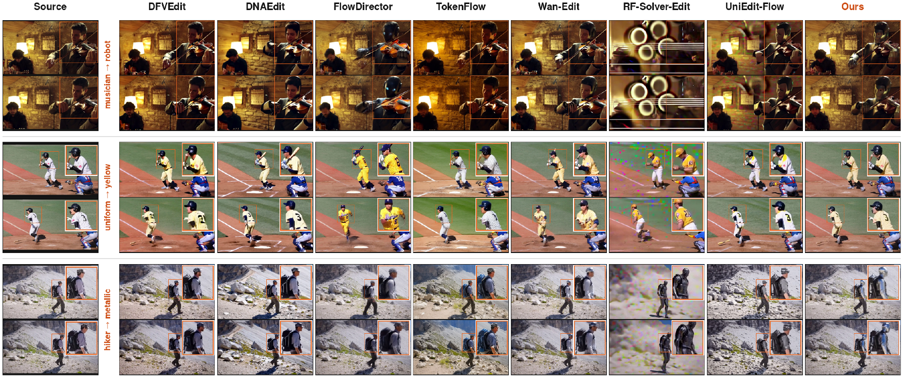
| Method | Dist. ↓ | PSNR ↑ | LPIPS ↓ | MSE ↓ | SSIM ↑ | CLIP ↑ | CLIP edit ↑ | Fidelity ↑ | Warp ↓ |
|---|---|---|---|---|---|---|---|---|---|
| TokenFlow | 21.94 | 20.73 | 157.68 | 98.45 | 72.67 | 26.57 | 19.91 | 89.33 | 31.9 |
| DNAEdit | 30.78 | 20.50 | 173.29 | 107.91 | 70.21 | 26.43 | 20.24 | 82.40 | 25.6 |
| DFVEdit | 13.69 | 24.24 | 98.38 | 43.63 | 80.99 | 25.87 | 19.98 | 89.15 | 26.3 |
| Wan-Edit | 11.53 | 25.24 | 91.52 | 36.10 | 82.87 | 26.39 | 20.23 | 89.29 | 24.8 |
| FlowDirector | 19.90 | 22.95 | 100.13 | 62.20 | 82.63 | 26.84 | 20.38 | 88.02 | 24.3 |
| UniEdit-Flow | 17.66 | 24.50 | 128.86 | 46.26 | 79.21 | 25.89 | 20.50 | 88.09 | 22.4 |
| RF-Solver-Edit | 59.88 | 18.44 | 280.39 | 205.82 | 62.14 | 25.33 | 19.65 | 69.89 | 23.0 |
| Ours | 6.07 | 29.12 | 66.66 | 16.36 | 88.80 | 26.37 | 20.78 | 90.41 | 21.2 |
SelectEdit 在结构距离、背景 PSNR / LPIPS / MSE / SSIM、编辑区域文本对齐、运动保真度和时间 warp 误差上取得该比较中的最佳结果；全局 CLIP 低于 FlowDirector，说明主要优势集中在局部编辑区域与源场景保持。
32 名参与者完成 672 次成对比较。与七种基线相比，SelectEdit 在编辑对齐、内容保持、时间一致性和总体偏好四项指标上均获得多数偏好；最高总体偏好为 88.5%。
3. 组件消融
| 配置 | PSNR ↑ | LPIPS ↓ | CLIP edit ↑ | Fidelity ↑ |
|---|---|---|---|---|
| w/o PSS | 28.03 | 71.36 | 21.05 | 89.98 |
| w/o RGSM | 28.87 | 68.02 | 20.74 | 90.31 |
| w/o MAMR | 28.08 | 75.42 | 20.77 | 89.79 |
| Ours | 29.12 | 66.66 | 20.78 | 90.41 |
MAMR 在几乎不改变编辑区域文本对齐的情况下，使 PSNR 提升 1.04 dB、LPIPS 降低 11.6%、时间 warp 误差降低 9.5%。PSS 与 RGSM 则分别承担轨迹结构控制和局部语义干预。
4. 效率
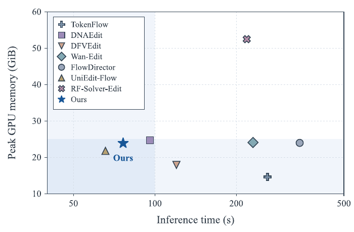
完整流程包含源光流估计与 MAMR，平均耗时 76.34 秒、峰值显存 23.89 GiB。相较 Wan-Edit 的 230.62 秒，推理时间减少 66.9%，显存开销相近。
局限
当前方法更擅长局部语义编辑。对于把森林整体变成沙漠或雪景等大范围背景改写，源一致性约束可能保留部分原始植被，使全局场景变化不够彻底。后续工作可根据编辑范围与语义需求，自适应调整源信息的保留强度。
我的角色
李昱辰｜共同第一作者
具体作者列表、作者分工、代码仓库和论文公开链接将在投稿与公开安排确认后补充。
完整论文
SelectEdit: Selective Source Consistency for Inversion-Free Video Editing
李昱辰（共同第一作者） · 其余作者信息待公开
为避免部分浏览器无法加载内嵌 PDF，下面同时提供完整 10 页的逐页阅读版本。原始 PDF 仍可通过上方按钮打开或下载。
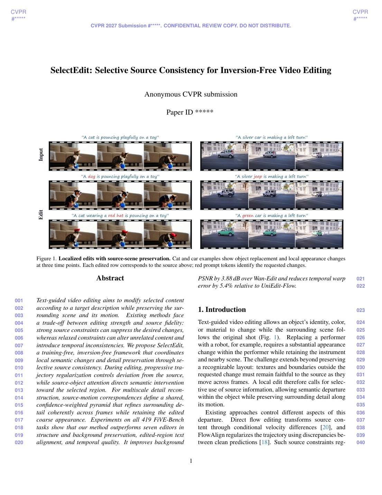
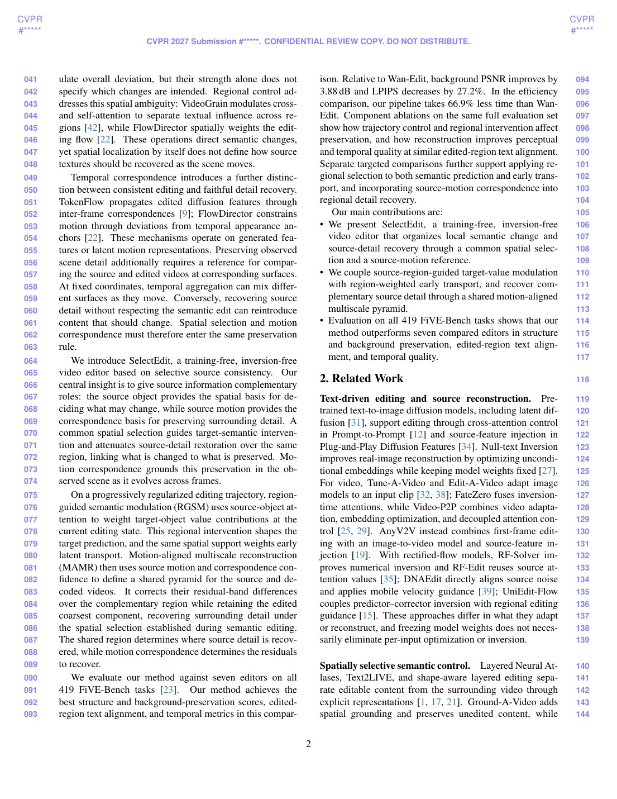
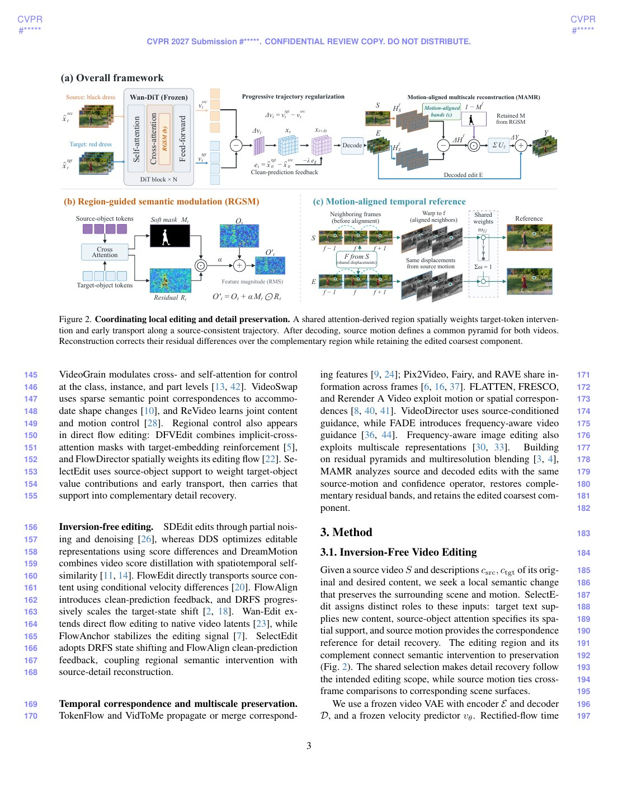
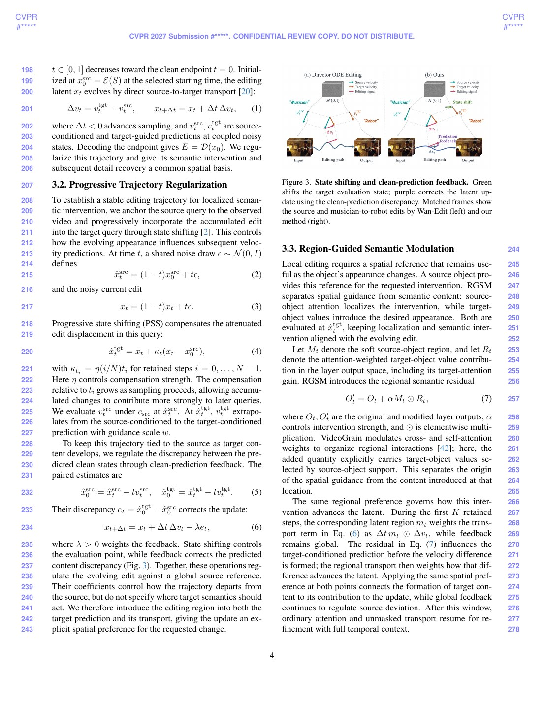
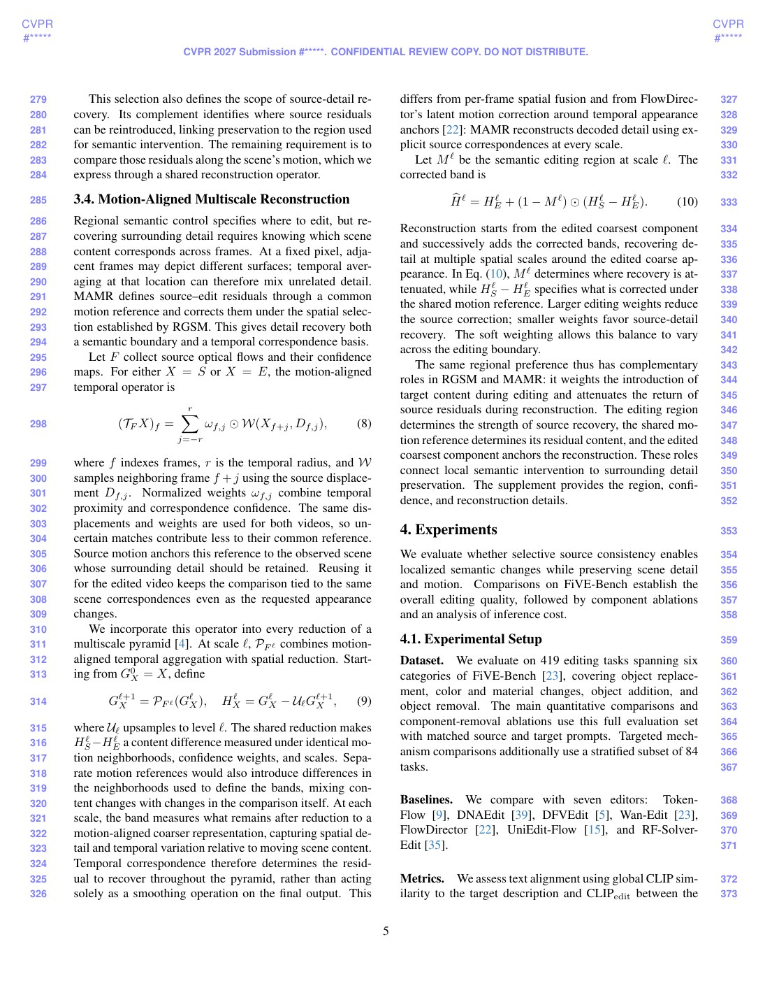
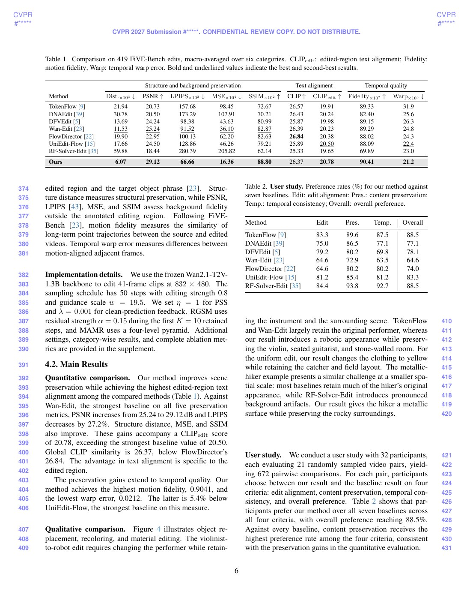
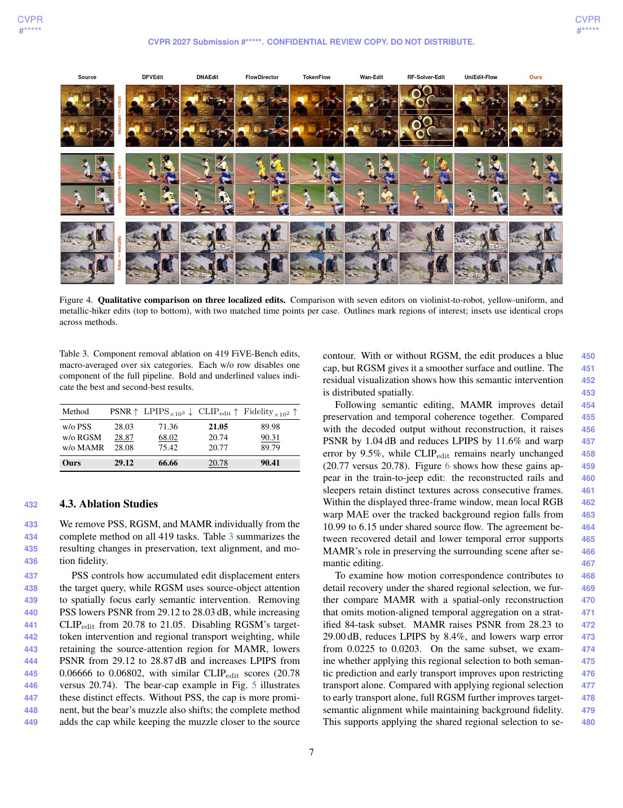
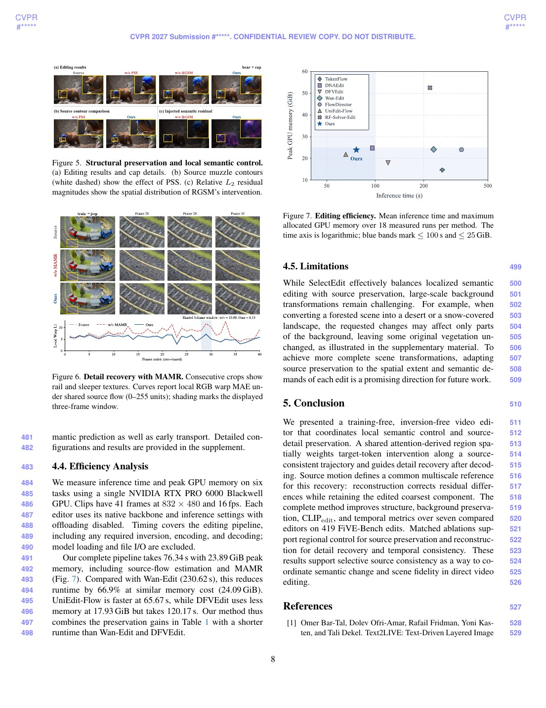
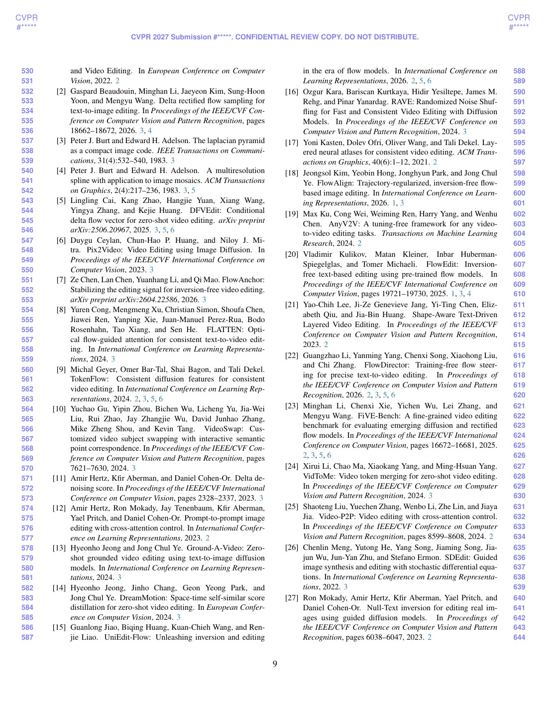
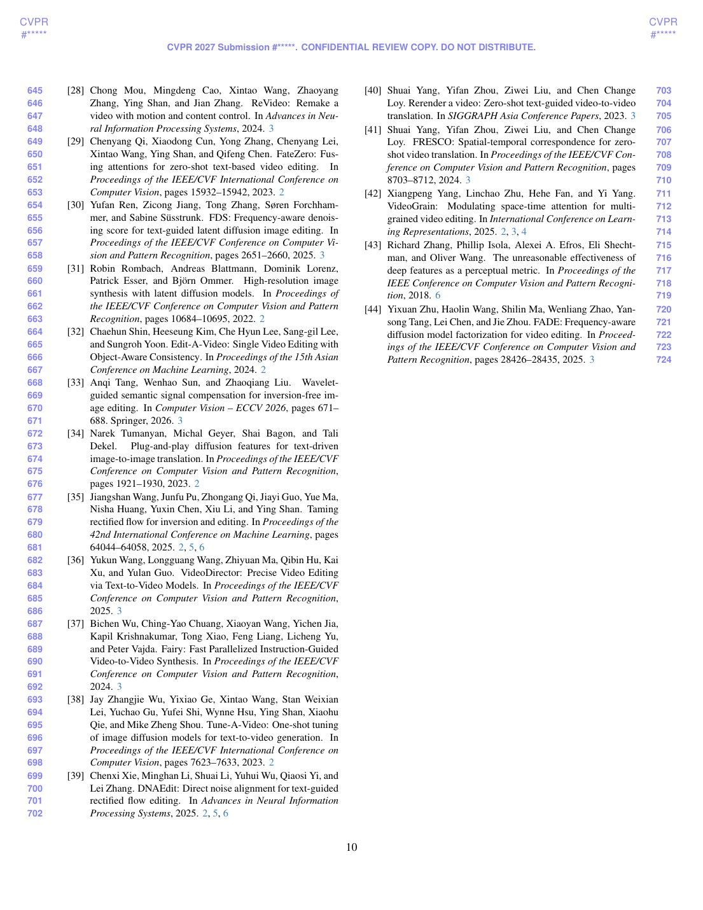